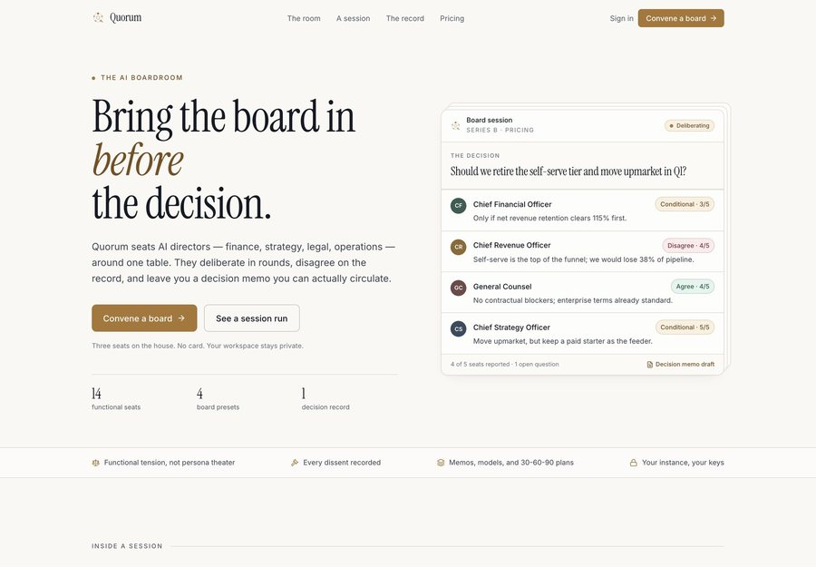
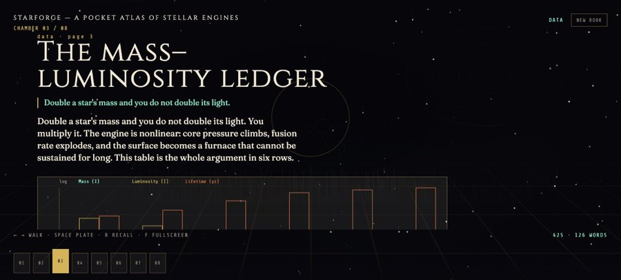
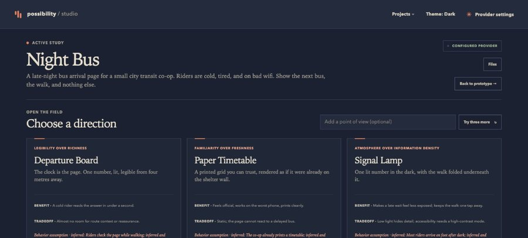

Each page shows the real interface, in the order you would use it. Screenshots are uncropped; click any of them for full size.

An LLM roundtable of business experts on one decision. Four positions, one memo.
Open the page →
A page-by-page PDF teacher. Text, charts, and images generated on your machine.
Open the page →
Describe a web design or animation in plain English. Get three working HTML prototypes.
Open the page →